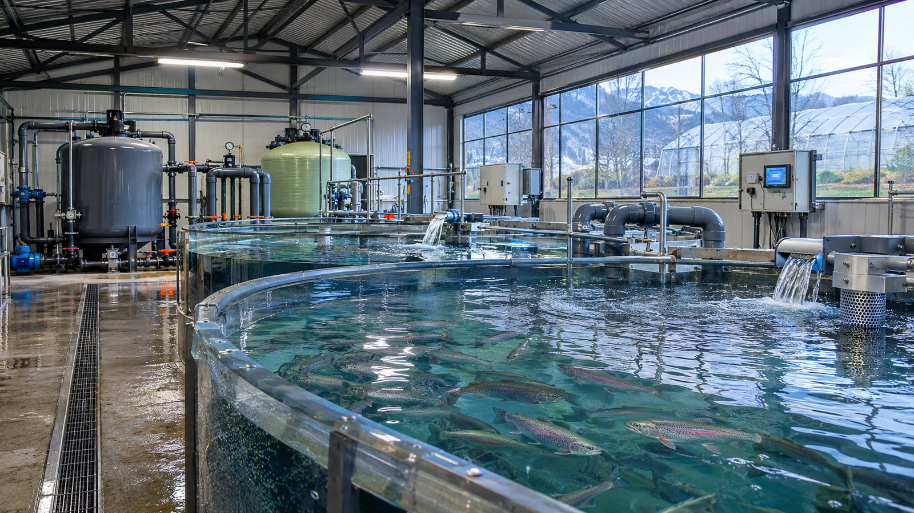

Welkin Aquaculture
Farm-fresh rainbow trout raised in a Recirculating Aquaculture System in Sopore.

Welkin Aquaculture
Something fresh is making waves
We're bringing farm-fresh rainbow trout straight from our tanks in Model Town, Sopore to your kitchen — raised with care in a closed, clean loop.
- Raised in a Recirculating Aquaculture System (RAS)
- Far less water than a traditional pond
- A short farm-to-table journey
- Expanding in Model Town, Sopore
 Rainbow trout in a Welkin tank
Rainbow trout in a Welkin tankHow RAS works
A loop of clean water
A Recirculating Aquaculture System cleans and reuses its water instead of constantly replacing it.
- 1
Fish tanks
Rainbow trout swim in clean, controlled tanks.
- 2
Solids filter
Waste and uneaten feed are filtered out of the water.
- 3
Biofilter
Helpful bacteria convert harmful compounds into safer ones.
- 4
Oxygen & reuse
Water is re-oxygenated and returned to the tanks to be used again.
Ready to order?
Message us on WhatsApp — tell us what you need and we'll reply with availability and rates.